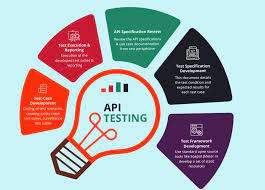

I'm Eslam Barakat
I'm a Quality Assurance Engineer with 3 years of e-Commerce
working remotely from Cairo,Egypt
3 years of experience in the area of Software Testing (Manual, Automation and API testing) with good understanding of
Test Planning,
Test Design, Test Execution, Defect Reporting and Tracking.Good knowledge of Understanding and Analyzing
Test Requirements,
Tracking changes and maintenance of Test Requirements.
Well acquainted with all phases of SDLC and STLC.Proficient in devising all the artifacts of testing such as
Test Scenarios,
Test Cases, Defect Reports and Test Summary reports.
